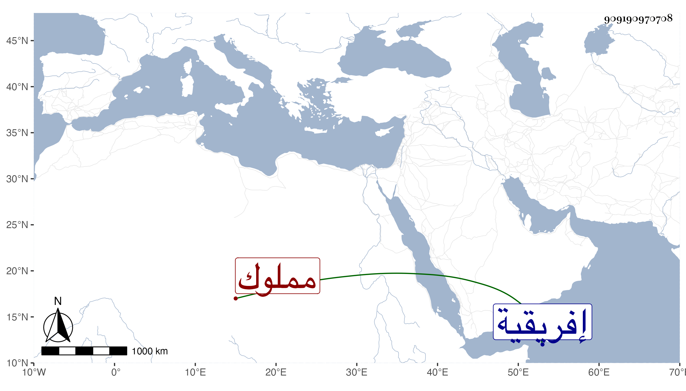

0902Sakhawi.DawLamic.ITO20230111-ara1.EIS1600.909190970708
Biography ID: 909190970708
845
نبيل أبو قطاية مملوك لصاحب أفريقية تقدم عنده حتى صار ضخما وتمول جدا وكثرت أولاده وأحفاده ثم ترقى عند حفيده ثم ولده عثمان بحيث صارت أولاده قوادا في البلاد أيضا بعدة أماكن إلى أن أخذه على حين غفلة وقتل أشر قتلة في سنة سبع وخمسين وشجن أولاده سامحه الله .
